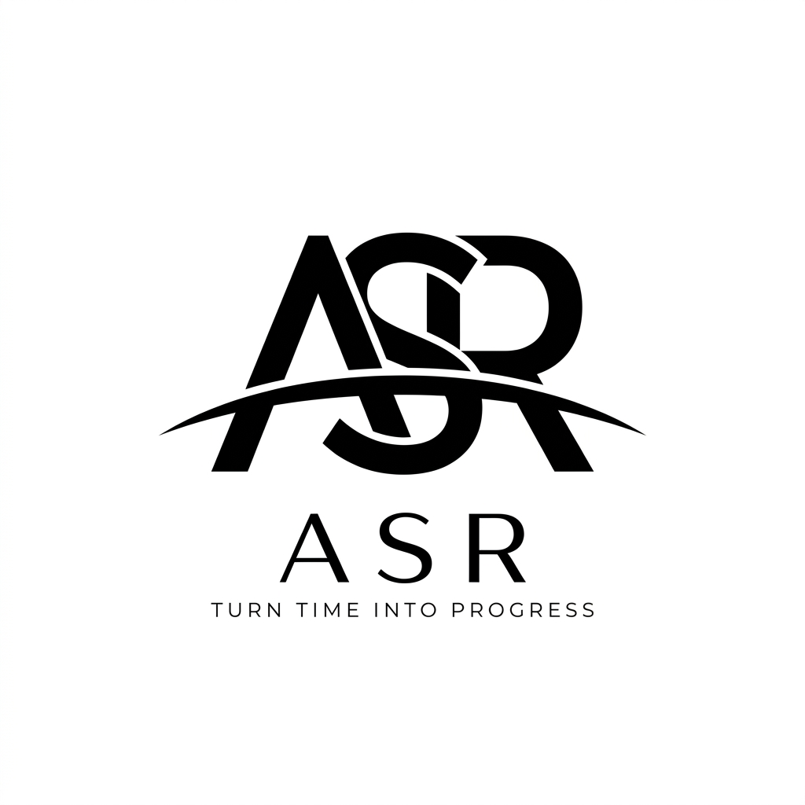
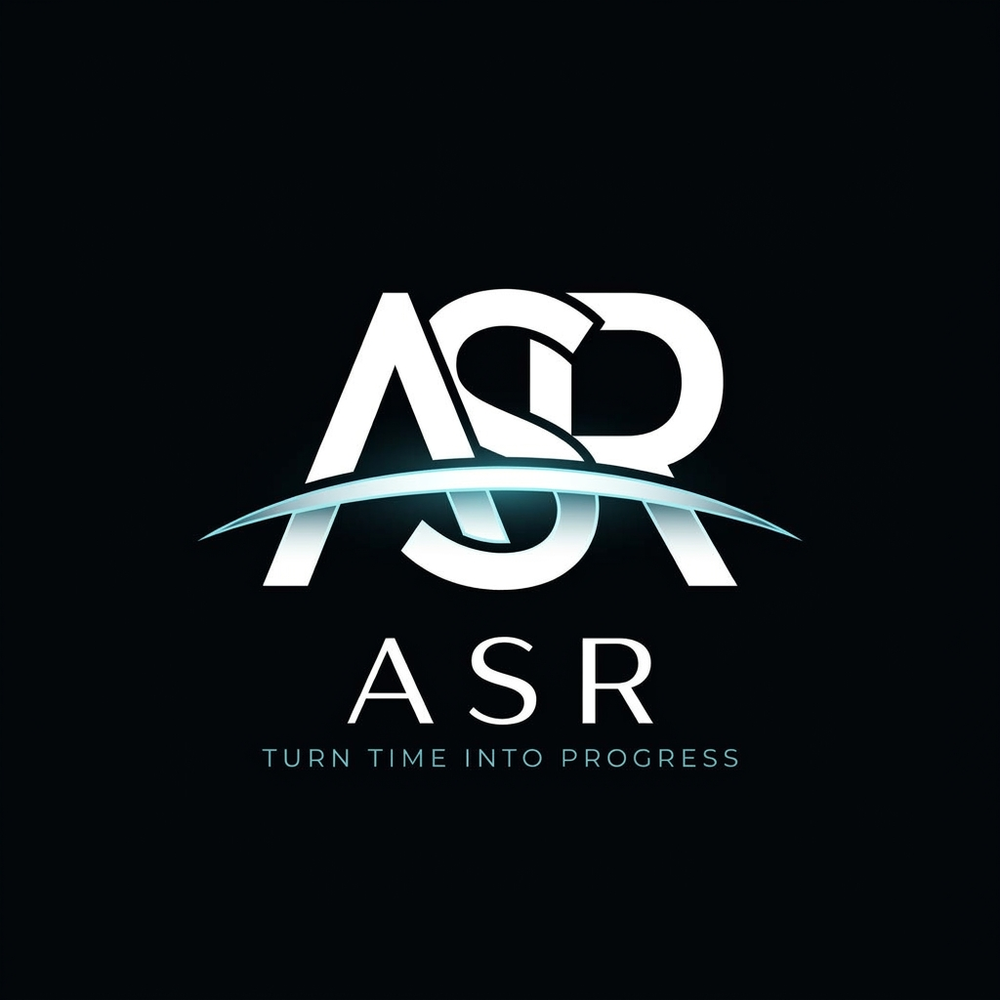
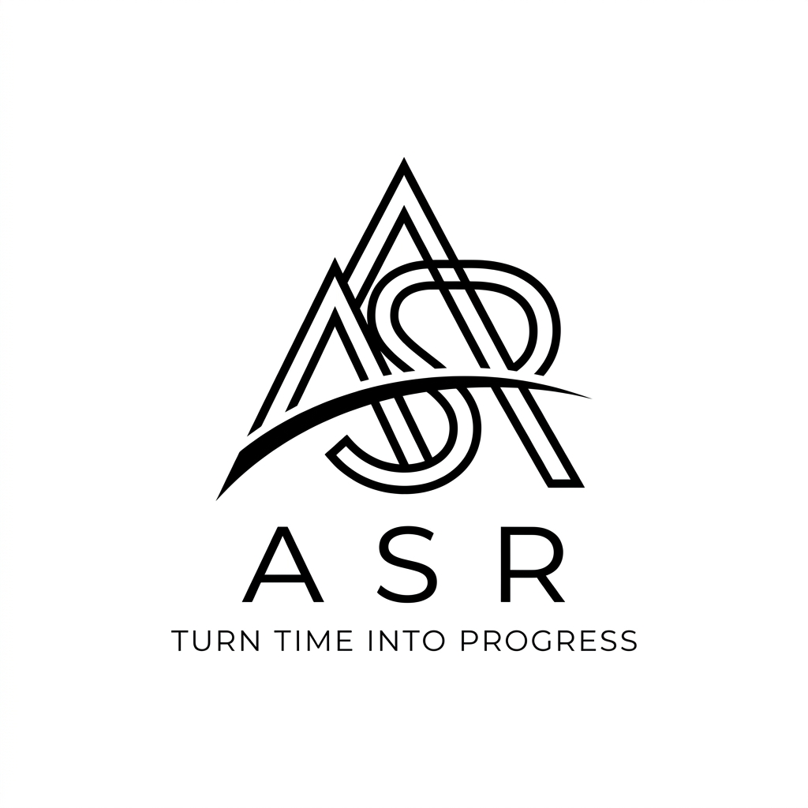

আপনার রেফারেন্স ইমেজ অনুযায়ী তৈরি করা নতুন ৩টি ASR মনোগ্রাম ডিজাইন নিচে দেওয়া হলো। আপনার পছন্দের অপশনটি বেছে নিন:
অক্ষর ৩টি নিখুঁতভাবে ইন্টারলক করা + সিগনেচার ডায়নামিক সুইশ ও প্রিমিয়াম টাইপোগ্রাফি।

অ্যাবসোলিউট ওবসিডিয়ান ব্ল্যাক ব্যাকগ্রাউন্ডে ক্রিস্প হোয়াইট ও নিয়ন সায়ান সুইশ।

শার্প পিরামিড ট্রায়াড ইন্টারলকিং স্ট্রাকচার।
